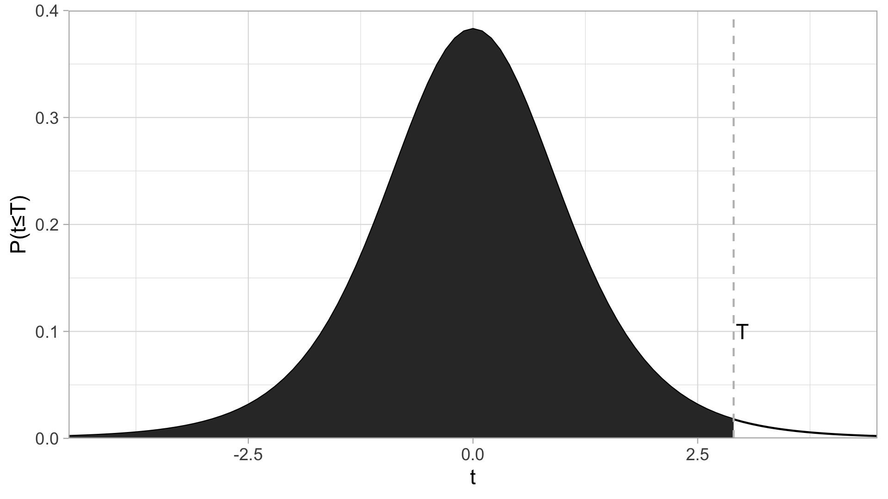

2.3 数学表达和运算
2.3.1 数的表达
2.3.1.1 浮点数
除非指定作为整数（见下），在R中所有的数都被存储为双精度浮点数的格式 (double-precision floating-point format)，其class为numeric。
class(3)## [1] "numeric"这会导致一些有趣的现象，比如\((\sqrt{3})^2 \neq 3\)：（强迫症患者浑身难受）
sqrt(3)^2-3## [1] -4.440892e-16浮点数的计算比精确数的计算快很多。如果你是第一次接触浮点数，可能会觉得它不可靠，其实不然。在绝大多数情况下，牺牲的这一点点精度并不会影响计算结果（我们的结果所需要的有效数字一般不会超过10位；只有当两个非常，非常大且数值相近对数字相减才会出现较大的误差）。
NaN（非数）和Inf（无限大）也是浮点数！
class(NaN)## [1] "numeric"class(Inf)## [1] "numeric"2.3.1.2 科学计数法
在R中可以使用科学计数法(AeB\(= A \times 10^B\))，比如：
3.1e5## [1] 310000-1.2e-4+1.1e-5## [1] -0.0001092.3.1.3 整数
整数的class为integer。有两种常见的方法创建整数：
1）在数后面加上L；
class(2)## [1] "numeric"class(2L)## [1] "integer"2）创建数列
1:10 #公差为1的整数向量生成器，包含最小值和最大值## [1] 1 2 3 4 5 6 7 8 9 10class(1:10)## [1] "integer"seq(5,50,5) #自定义公差，首项，末项和公差可以不为整数## [1] 5 10 15 20 25 30 35 40 45 50class(seq(5,50,5)) #因此产生的是一个浮点数向量## [1] "numeric"seq(5L,50L,5L) #可以强制生成整数## [1] 5 10 15 20 25 30 35 40 45 50class(seq(5L,50L,5L)) #是�整数没错## [1] "integer"整数最常见的用处是indexing（索引）。
2.3.1.3.1 整数变成浮点数的情况
这一小段讲的比较细，请酌情直接跳到下一节（2.3.2）。
整数与整数之前的加，减，乘，求整数商，和求余数计算会得到整数，其他的运算都会得到浮点数，（阶乘(factorial)也是，即便现实中不管怎么阶乘都不可能得到非整数）：
class(2L+1L)## [1] "integer"class(2L-1L)## [1] "integer"class(2L*3L)## [1] "integer"class(17L%/%3L)## [1] "integer"class(17L%%3L)## [1] "integer"class(1000L/1L)## [1] "numeric"class(3L^4L)## [1] "numeric"class(sqrt(4L))## [1] "numeric"class(log(exp(5L)))## [1] "numeric"class(factorial(5L))## [1] "numeric"整数与浮点数之间的运算，显然，全部都会产生浮点数结果，无需举例。
另外一个需要注意的地方是，取整函数2.3.2.3并不会产生整数。如果需要的话，要用as.integer()函数。
2.3.2 运算
2.3.2.1 二元运算符号
R中的binary operators（二元运算符）有：
| 符号 | 描述 |
|---|---|
+ |
加 |
- |
减 |
* |
乘 |
/ |
除以 |
^或** |
乘幂 |
%/% |
求整数商，比如7%%3\(=2\) |
%% |
求余数，比如7%%3\(=1\) |
其中求余/求整数商最常见的两个用法是判定一个数的奇偶性，和时间，角度等单位的转换。（后面再详细介绍）。
2.3.2.2 \(e^x\)和\(\log_x{y}\)
exp(x)便是运算\(e^x\)。如果想要\(e=2.71828...\)这个数：
exp(1)## [1] 2.718282log(x, base=y)便是运算\(\log_y{x}\)，可以简写成log(x,y)（简写需要注意前后顺序，第2.6.2有解释）。
默认底数为\(e\)：
log(exp(5))## [1] 5有以10和2为底的快捷函数, log10()和log2()
log10(1000)## [1] 3log2(128)## [1] 72.3.2.3 近似数（取整，取小数位，取有效数字）
取有效数字用signif()函数；第一个参数是对象，第二个参数是保留的位数；若保留的位数未指定，默认为6.
signif(12.3456789, 4)## [1] 12.35当对象的有效数字小于你想保留的有效数字位数时，它不会让你乱来（下面round()函数也类似）：
signif(12.3, 8)## [1] 12.3保留小数位用round()函数。
round(12.3456789, 3) # 保留3个小数位## [1] 12.346若不指定保留多少位，默认为0，即四舍五入地取整：
round(13.5)## [1] 14此外，还有三种取整函数：floor(), ceiling()和trunc()
floor(5.6) # = 5 # “地板”；比x小的最近的整数
ceiling(5.4) # = 6 # “天花板”；比x大的最近的整数
floor(-5.6) # = -6 # 不是-5，因为-6是比-5.6小的最近的整数
ceiling(-5.4) # = -5 # 不是-6；因为-5是比x大的最近的整数
trunc(-5.6) # = -5 # 你可能需要这个；它无视了小数点后面的位数注意，所有取整函数给出的的结果都并不是整数！
class(ceiling(7.4))## [1] "numeric"虽然浮点数使用起来真没啥不方便的，但是如果你一定需要的话，可以用as.integer()函数把它转换成真·整数。
2.3.2.4 NA, Inf, NaN相关 {math-NA}
我不知道张三有几个苹果，我也不知道李四有几个苹果；你问我张三和李四共有几个苹果：
NA + NA## [1] NA鬼才知道咧！
类似地，NA - NA, NA/NA, NA*NA, log(NA)都等于NA
NA^0等于几？别上当！R的开发者们可没有忘记\(\forall x\in \mathbb{R:x^0 = 1}\)
Inf, 即\(\infty\), 表示很大的数字（准确地说，大于等于\(2^{1024}\)即\(1.797693\times10^{308}\)的数字）它还有个负值，-Inf. 以下是几个结果为Inf的例子：
exp(1000) # = Inf; 这个很明显
1/0 # = Inf; 0被当作很小的数
0^(-1) # = 1/(0^1) = 1/0 = Inf
log(0) # = -Inf; 0又被当作很小的数NaN是“非数” (not a number). 运算结果为NaN的例子有：
0/0 # NaN
log(-1) # = NaN
0^(3+8i) # = NaN + NaNi
Inf-Inf; Inf/Inf # = NaN
-NaN # = NaNInf和NaN的类型是numeric（浮点数）.
class(Inf); class(NaN)## [1] "numeric"## [1] "numeric"2.3.2.5 R中自带的数学函数集合
基础
| 函数 | 描述 |
|---|---|
exp(x) |
\(e^x\) |
log(x,y) |
\(\log_yx\) |
log(x) |
\(\ln(x)\) |
sqrt(x) |
\(\sqrt{x}\) |
factorial(x) |
\(x!=x\times(x-1)\times(x-2)\ldots\times2\times1\) |
choose(n,k) |
\(\binom{n}{k}=\frac{n!}{k!(n-k)!}\)（二项式系数） |
gamma(z) |
\(\Gamma(z)=\int_0^\infty x^{z-1}e^{-x}dx\)（伽马函数） |
lgamma(z) |
\(\ln(\Gamma(z))\) |
floor(x), ceiling(x), trunc(x), |
取整；见上一小节。 |
round(x, digits = n) |
四舍五入，保留n个小数位，n默认为0 |
signif(x,digits = n) |
四舍五入，保留n个有效数字，n默认为6） |
sin(x), cos(x), tan(x) |
三角函数 |
asin(x), acos(x), atan(x) |
反三角函数 |
sinh(x), cosh(x), tanh(x) |
双曲函数 |
abs(x) |
\(|x|\)（取绝对值） |
sum(...), prod(...) |
所有元素相加之和/相乘之积 |
2.3.3 简易的统计学计算
本节简要解释了R中的基础统计学函数，t分布，t检验和\(\chi^2\)检验。统计学方法并不是本书的重点，因此可以酌情跳到下一章。
2.3.3.1 基础
中位数median(); 平均数mean(); 方差var(); 标准差sd().
2.3.3.2 t分布
众所周知，t分布长这样：

阴影面积为\(P(t<T)\)，虚线对应的\(t\)为\(T\).
qt()可以把\(P(t≤T)\)的值转化成\(T\),pt()则相反。
假设你需要算一个confidence interval（置信区间），confidence level（置信等级）为\(95\%\)，即\(\alpha=0.05\)，degrees of freedom(自由度)为\(12\)，那么怎么算\(t^*\)呢？
qt(0.975, df = 12)## [1] 2.178813为什么是\(0.975\)？因为你要把\(0.05\)分到左右两边，所对应的t*就等同于t分布中，\(P(t ≤ T) = 0.975\)时T的值。
再举一个例子，你在做t检验，双尾的，算出来\(t=1.345\)，自由度是\(15\)，那么\(p\)值怎么算呢？
p <- (1-(pt(2.2, df = 15)))*2
p## [1] 0.04389558其中pt(2.2, df = 15)算出阴影面积（\(P(t≤T)\)的值），1减去它再乘以2就是对应的双尾t检验的\(p\)值。
2.3.3.3 z分布
没有z分布专门的函数。可以直接用t分布代替，把df调到很大（比如999999）就行了。比如我们试一下\(95\%\)置信区间所对应的\(z*\)：
qt(0.975,9999999)## [1] 1.959964（果然是\(1.96\)）
2.3.3.4 t检验
t检验分为以下几种：
- One sample t test （单样本）
- paired t test（配对）
- Two sample…（双样本）
- Unequal variance (Welch) t test（不等方差）
- Equal variance t test（等方差）
在R中做t检验，很简单，以上这些t检验，都是用t.test 这个函数去完成。
以单样本为例：
x <- c(2.23,2.24,2.34,2.31,2.35,2.27,2.29,2.26,2.25,2.21,2.29,2.34,2.32)
t.test(x, mu = 2.31)##
## One Sample t-test
##
## data: x
## t = -2.0083, df = 12, p-value = 0.06766
## alternative hypothesis: true mean is not equal to 2.31
## 95 percent confidence interval:
## 2.257076 2.312155
## sample estimates:
## mean of x
## 2.284615可以看到\(p=0.06766\)。
R的默认是双尾检验，你也可以设置成单尾的：
x <- c(2.23,2.24,2.34,2.31,2.35,2.27,2.29,2.26,2.25,2.21,2.29,2.34,2.32)
t.test(x, mu = 2.31, alternative = "less") # 检验是否*less* than μ##
## One Sample t-test
##
## data: x
## t = -2.0083, df = 12, p-value = 0.03383
## alternative hypothesis: true mean is less than 2.31
## 95 percent confidence interval:
## -Inf 2.307143
## sample estimates:
## mean of x
## 2.284615\(p\)值瞬间减半。
双样本/配对:
x <- c(2.23,2.24,2.34,2.31,2.35,2.27,2.29,2.26,2.25,2.21,2.29,2.34,2.32)
y <- c(2.27,2.29,2.37,2.38,2.39,2.25,2.39,2.16,2.55,2.81,2.19,2.44,2.22)
t.test(x, y)##
## Welch Two Sample t-test
##
## data: x and y
## t = -1.5624, df = 13.65, p-value = 0.1411
## alternative hypothesis: true difference in means is not equal to 0
## 95 percent confidence interval:
## -0.18460351 0.02921889
## sample estimates:
## mean of x mean of y
## 2.284615 2.362308R的默认是non-paired, unequal variance，你可以通过增加paired = TRUE，var.equal = TRUE这两个参数来改变它。
t.test(x, y, paired = TRUE)##
## Paired t-test
##
## data: x and y
## t = -1.4739, df = 12, p-value = 0.1662
## alternative hypothesis: true difference in means is not equal to 0
## 95 percent confidence interval:
## -0.19253874 0.03715412
## sample estimates:
## mean of the differences
## -0.077692312.3.3.5 \(\chi^2\) 检验
\(\chi^2\)检验有两种，goodness of fit test（适配度检验）和contigency table test/test of independence（列联表分析/独立性检验）。都是用chisq.test()函数去完成。
2.3.3.5.1 适配度检验
假设我们制造了一个有问题的骰子，使1至6朝上的概率分别为：
expected_probs <- c(0.05, 0.1, 0.15, 0.2, 0.2, 0.3)然后我们投掷了100次，实际1至6朝上的次数分别为：
observed_vals <- c(6, 9, 14, 24, 18, 29)通过chisq.test()，检验实际的1至6朝上概率是否与预期有偏差：
chisq.test(observed_vals, p = expected_probs) # 参数p是指概率##
## Chi-squared test for given probabilities
##
## data: observed_vals
## X-squared = 1.4, df = 5, p-value = 0.9243p值很大（远大于0.05），因此结论是骰子各面朝上的概率符合预期。
如果不指定p参数，默认为检测是否所有值相等（即骰子的所有面朝上的概率相等）：
chisq.test(observed_vals)##
## Chi-squared test for given probabilities
##
## data: observed_vals
## X-squared = 23.24, df = 5, p-value = 0.0003037这时p值小于0.05. 得出“骰子各面朝上的概率不等”的结论。
2.3.3.5.2 列联表分析/独立性检验
假设我们有一组不同年级的学生参加社团的人数数据：
(社团参与 <- matrix(c(28,36,40,40,32,33,38,29,36), nrow = 3, dimnames = list(c("一年级", "二年级", "三年级"), c("棒球", "足球", "网球"))))## 棒球 足球 网球
## 一年级 28 40 38
## 二年级 36 32 29
## 三年级 40 33 36我们想知道社团的参与，与所在年级是否是独立事件：
chisq.test(社团参与)##
## Pearson's Chi-squared test
##
## data: 社团参与
## X-squared = 3.7587, df = 4, p-value = 0.4396p值不小于0.05，无法拒绝“社团的参与，与所在年级是独立事件”的虚无假设。
彩蛋：用R代码实现卡方分布的概率密度函数的图像：
#其实还可以更精简，但是为了易读性不得不牺牲一点精简度。
Z <- matrix(rep(rnorm(1000000), 6), nrow = 6)^2
X <- Z^2
Q <- matrix(nrow = 6, ncol = 1000000)
for (i in (1+1):6) {
Q[1,] = Z[1,]
Q[i,] = Q[(i-1),] + Z[i,]
}
plot(NULL, xlim=c(0.23,6), ylim = c(0,1),
main = expression(paste('X ~ ', chi^'2', '(k)')),
xlab = "x",
ylab= expression(f[k]*'(x)')
)
colors <- c('blue', 'black', 'red', 'green', 'gray', 'orange')
for (i in 1:6) {
lines(density(Q[i,]),
col=colors[i],
lwd=2)
}
legend('topright',c('k=1','k=2','k=3','k=4','k=5','k=6'),
fill = colors)
2.3.3.5.3 其他
R自带的检验还有Box.test(), PP.test(), ansari.test(), bartlett.test(), wilcox.test等共31种。查看帮助文件或利用网络资源以了解更多。